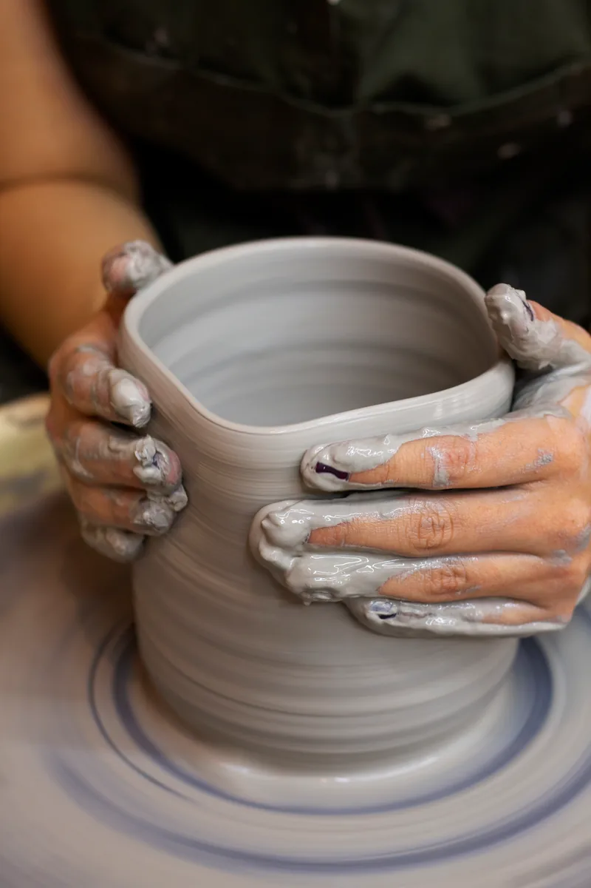
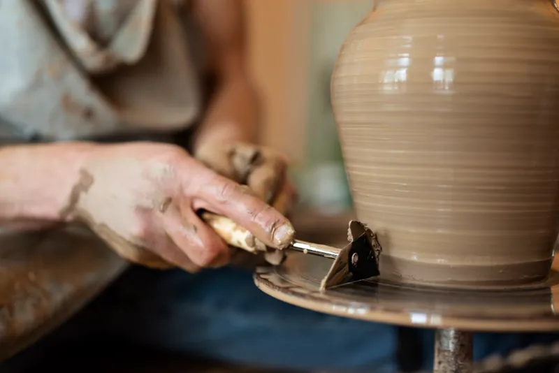
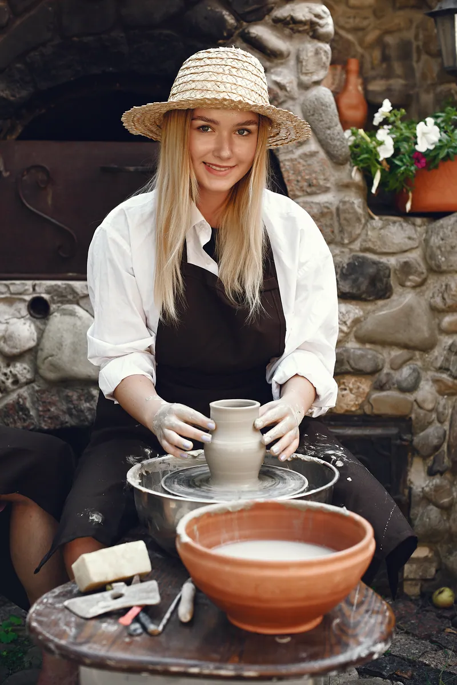

Első találkozás az agyaggal
Korongozó kóstoló
Próbáld ki, hogyan formálódik az agyag a kezed alatt. Kezdőként is csatlakozhatsz.
3 óra alkotás és kikapcsolódás
Szentendrei kézműves műhely
Próbáld ki a korongozást kis csoportban, egy hangulatos szentendrei kerámiaműhelyben. Előképzettség nélkül, a saját tempódban alkothatsz, miközben kiszakadsz a hétköznapokból.

Programok és alkotóélmények
Első találkozás az agyaggal
Próbáld ki, hogyan formálódik az agyag a kezed alatt. Kezdőként is csatlakozhatsz.
3 óra alkotás és kikapcsolódás

Alapok négy alkalom alatt
Adj időt az alkotásnak: négy alkalmon át ismerkedhetsz a korongozás alapjaival.
4 hét, egymásra épülő alkalmakkal

Közös élmény
Közös kikapcsolódás a korong mellett, ahol a csapat együtt próbálhatja ki az agyagformálást.
Közös alkotás, egyeztetett időpontban
Az alkotó és a helyszín
Fehér Dóra vagyok, az Agyagpad alapítója. 2009-ben sajátítottam el a korongozás alapjait, és azóta is folyamatosan tanulok, kísérletezem. Népi iparművészként olyan bögréket, tálakat és vázákat készítek, amelyeket öröm kézbe venni és nap mint nap használni.
A legnagyobb öröm számomra, amikor másokkal is megoszthatom az agyagozás élményét. Szentendrei műhelyemben kis csoportban, oldott hangulatban alkotunk, így mindenkire jut idő és figyelem. Akkor is bátran csatlakozz, ha most próbálod először: a saját tempódban haladhatsz, én pedig segítek az első mozdulatoktól.

Kézzel készült bögrék, tálak, tányérok és vázák, amelyek a hétköznapokba is becsempészik az alkotás örömét. Ismerd meg munkáimat, és nézz körül a műhelyben!
Csütörtök–vasárnap: 10:00–18:00
2000 Szentendre, Agyagliget köz 4.

Érdeklődés és kapcsolat
Kipróbálnád a korongozást, közös alkotást szerveznél, vagy ajándékötletet keresel? Válassz programot, és írd meg, miben segíthetek! A kerámiákról is bátran kérdezhetsz.
Az érdeklődés elküldése még nem jelent helyfoglalást. A részleteket és a szabad időpontokat veled egyeztetjük.